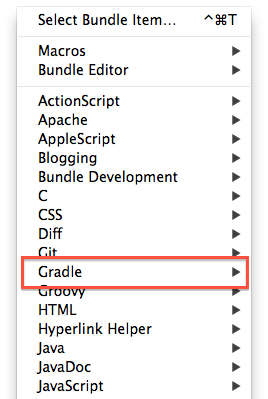

Gradle with TextMate
概要
GradleをTextMateと連携させて、TextMateから実行する。
TextMate
参考
http://www.breskeby.com/gradlecasts/2011/02/08/33/
TextMateのBundle DL
https://github.com/alkemist/gradle.tmbundle
書いてある通り、
gradlewがプロジェクトにおいてある場合のみ動作する。
TextMateのBundleは、TextMateが入っている状態だと
こんな感じに表示される。
どこでもいいので展開するとインストール完了。
TextMate > Bundles に、Gradleの項目が表示されているはず。

ただ、これだけだと特に何もいいことがない。
導入手順
・TextMateでGradleのシンタックスハイライトを有効にする
・Gradleのtaskの実行をTextMateから行えるようにする
の順で解説する。
TextMateでGradleのシンタックスハイライトを有効にする
GroovyのTextMate Bundleを入れると、勝手に有効になる。
Gradleで動いてるのGroovyだしな。納得。
Groovy TextMate bundle DL
https://github.com/TextMate/groovy.tmbundle
こんな見た目になるはず。

正直もうちょっとなんか有るんじゃないかと思うけど、、わからん。
特に困ってはないのでこれで過ごしてる。
Gradleのtaskの実行をTextMateから行う
本題。
GradleのTextMate Bundleを使うには、
そのプロジェクトにgradlewが作られている必要が有る。
Wrapperって何って人はここみるといいと思う。
http://gradle.monochromeroad.com/docs/userguide/gradle_wrapper.html
プロジェクトのbuild.gradleに、
task wrapper(type: Wrapper) {
gradleVersion = '1.0'
}
と足して、
gradle wrapper
で、

gradleフォルダとかが完成するはず。
これで準備OK、
TextMateを起動、
⌘ + control + g とかやると、メニューが出る。

Run Command(project) を選ぶと、下記みたいなウインドウが出てきて、
入力したtaskやオプションを実行できる。

実行結果

などなど。
これでTerminalとTextMateを行き来しないでよくなった。